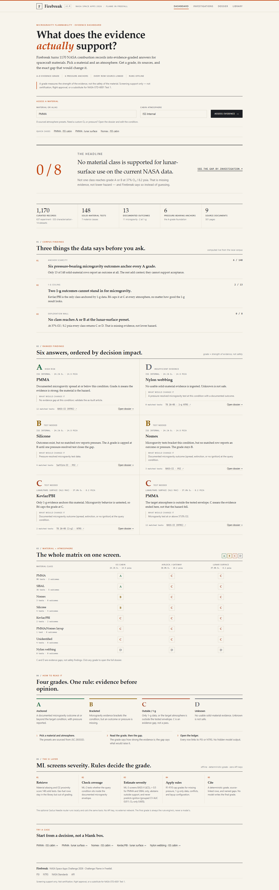

Microgravity flammability · Evidence screening
Know what the evidence actually supports.
Firebreak turns 637 NASA combustion records and 501 pages of reports and standards into source-linked A–D evidence grades for spacecraft materials. Pick a material and an atmosphere. Get the grade, its sources, and the exact gap that would change it.
PMMA blows off at 16% O₂ in 1-g. In microgravity it keeps spreading at 13.6% O₂ — below the Earth test that was supposed to bound it.
That negative margin is why a passed test is not the same as a safe material. Firebreak exists to show where the evidence stops.
BASS-II summary, NASA/TM-20210011385 · NTRS


Four questions. One deterministic answer.
Every result is produced by a versioned rule engine. No model writes the final grade.
What evidence exists?
The closest solid-material tests, each linked to a PSI row, an NTRS page, or a NASA standard clause.
What does it support?
An A–D evidence grade and a verdict: acceptable, test needed, high risk, or insufficient evidence.
What is uncertain?
Named gaps, out-of-envelope flags, 1-g-only data, and conflict detection between sources.
What would change it?
The specific test, pressure, or outcome that would move the grade — before the decision, not after.
Grades measure evidence, not safety.
A grade is a statement about documentation. It is never a certification.
Anchored
A documented microgravity outcome at or beyond the target condition, with pressure reported.
Bracketed
Microgravity evidence brackets the condition, but an outcome or pressure is missing.
Outside / 1-g
Only 1-g data, or the atmosphere is outside the tested envelope. C is a gap, not a pass.
Unknown
No usable solid-material evidence is ingested. Unknown is not safe.
How a grade is built.
Retrieval, coverage, and severity are models. The grade is rules. The two never swap roles.
Retrieve
Material aliasing and O₂ proximity score 148 solid tests. Gas-fuel rows stay in the library but out of grading.
Check coverage
ML-2 tests whether the query condition sits inside the documented microgravity envelope.
Estimate severity
ML-3 flags BASS-II ΔCO₂ severity for seen classes. It does not predict ignition.
Apply rules
Ten versioned rules cap grades for missing pressure, 1-g-only data, conflicts, and layup configuration.
Cite
A deterministic grade, source-linked rows, and named gaps. Every rule carries its citation.
Inside the app.
A dossier per material, a ranked Gap Map, and a searchable source library.
Every grade has a source.
501 pages are indexed locally. Links resolve to the test row, report page, or standard clause.
Firebreak ingests NASA PSI experiment tables, NTRS reports, and NASA standards into one local SQLite corpus. Missing values stay missing. Nothing is imputed into a condition, an outcome, or a pressure.
The library page searches the source text directly, so a claim can be checked against the document that made it — not against a generated summary.
- NASA PSI — BASS-II, Saffire I–III, ACME-BRE, SPICE637 records
- NTRS reports, including the BASS-II summary and TB 26-057 reports
- NASA standards — JSC 29353D, NASA-STD-6001B2 documents
- MAPTIS and all authenticated sourcesexcluded
Full citations: docs/sources.md
What the data refuses to support.
The most useful output is often not a grade, but a defensible statement of what is missing.
Six pressure-bearing microgravity anchors
Only 6 of 148 solid-material tests report both a microgravity outcome and a pressure. The rest add context; they cannot support acceptance. Grade A is built on those six.
Two documented outcomes are 1-g only
Kevlar/PBI is the only class anchored by 1-g data. R6 caps it at C at every atmosphere, no matter how good the Earth result looks.
No class reaches A or B at the lunar-surface preset
At 37% O₂ / 8.2 psia every class returns C or D. That is missing evidence, not lower hazard.
Zero invented pressures
PSI solid-material tables do not report pressure. Rather than fill in a plausible value, Firebreak caps those grades at B. Grades rise only where a cited passage states the condition.
Run it offline.
Data is built once, hashed, and served locally. The demo makes no network calls.
$ python -m venv .venv $ pip install -r requirements.txt $ python -m uvicorn app.main:app --port 8010 $ curl -s http://127.0.0.1:8010/healthz {"status":"ok","experiments":637,"documents":9} $ python -m pytest -q 48 passed
48 tests cover the rule engine, dashboard insights, ML gates, and assistant routing. The extraction audit checks 30 stratified rows, 60 of 60 fields.
The severity screen reaches a grouped-CV AUC of 0.834 against 0.607 for an O₂-only baseline. It is scoped to BASS-II material classes and CO₂ rise — not ignition, not flame spread.
Python 3.11 · FastAPI · SQLite · scikit-learn · no API key required at runtime.